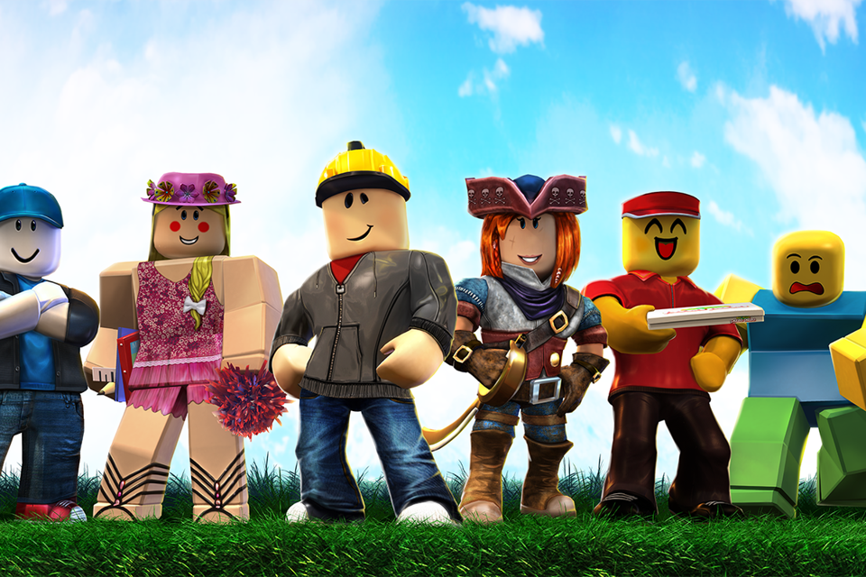
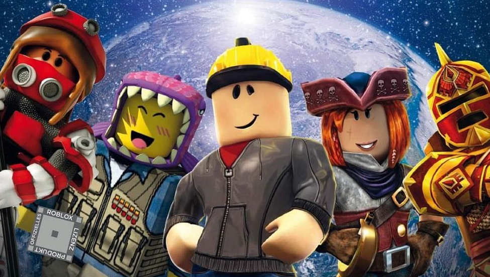
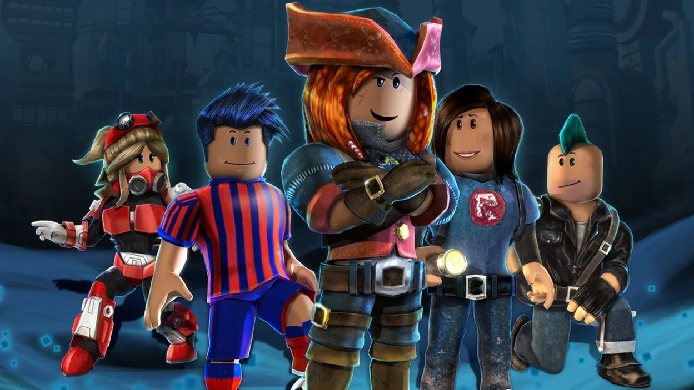

Roblox — игровая онлайн-платформа и система создания игр, позволяющая любому пользователю создавать свои собственные и играть в созданные другими игры, охватывающие широкий спектр жанров. В некоторых источниках Roblox называют метавселенной. По состоянию на август 2020 года у Roblox более 164 млн активных пользователей в месяц; на октябрь 2021 года — более 226 млн. Все они, в общей сумме, наиграли в нём более 107 млрд часов. Причём в Roblox играют более половины всех детей США в возрасте до 16 лет. Рост его популярности начался во второй половине 2010 года, а резко ускорился в связи с пандемией COVID-19. Сайт игровой платформы занимает второе место по популярности среди подростков, сразу после сайтов Google, включая YouTube.